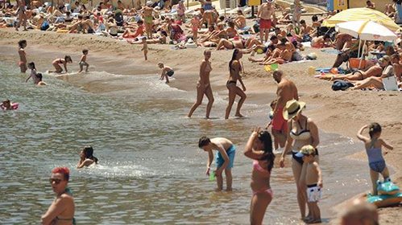

Notícias Nacionais de Malta
sexta-feira, 9 de junho de 2017, 13 : 11
Terceira melhor qualidade de água do mar da UE
Mas os problemas de esgoto persistem
O escoamento de águas residuais continua a ser uma das causas mais significativas de poluição da água em locais de banho, apesar das melhorias, de acordo com um relatório da Agência Europeia do Meio Ambiente.
Malta que, de acordo com o relatório, tem a terceira melhor qualidade de água do mar da UE, testemunhou vários problemas de poluição por esgoto nos últimos anos.
Um desses incidentes, em fevereiro passado, ocorreu quando mergulhadores em Ras il-Ħobż - Gozo, novamente relataram nuvens grossas de esgoto subaquático, um problema que foi repetidamente destacado, mas nunca foi abordado.
As autoridades reconheceram que o problema "vem crescendo ao longo de vários anos" e exigiu uma "solução sustentável".
O relatório da Agência Europeia do Ambiente informa que uma das fontes mais frequentes de poluição da água é a contaminação fecal de esgoto e animais.
"leupay Esta é uma causa de preocupação para a saúde pública e pode levar a águas balneares de má qualidade. A poluição por esgoto é muitas vezes o resultado de vazamentos de águas pluviais de esgoto, drenagem de água de fazendas e terras agrícolas ou de poços e tanques sépticos mal conservados ", afirma o relatório.
O relatório, que classifica todos os locais de banhos na costa e no continente de toda a UE, descobriu que Malta estava atrás apenas de Luxemburgo e Chipre na qualidade das águas balneares.
Dos 87 locais de banhos notificados em torno das ilhas, 86 receberam o rigoroso ranking de "excelente". O local restante, não identificado no relatório, teve um nível de classificação menor, embora ainda acima dos requisitos mínimos de qualidade.
Em toda a Europa, o relatório encontrou uma melhoria acentuada na qualidade da água de banho entre 2015 e 2016, com apenas 316 de mais de 21 mil sites classificados abaixo do nível recomendado.
De acordo com a legislação da UE, esses locais devem ser fechados no próximo verão e devem ter medidas para reduzir a poluição e eliminar os riscos para a saúde.
Os países com as maiores taxas de águas balneares de baixa qualidade foram a Irlanda, Reino Unido e Eslováquia.
A legislação europeia e as políticas nacionais da água, bem como, muitos anos de investimento no melhor tratamento de águas residuais, no sistema de esgotos e na redução da poluição das fazendas, levaram a água de banho da Europa ser muito mais limpa hoje do que era há décadas", afirma o relatório.
Os cidadãos são encorajados a se envolver mais ativamente na proteção do meio ambiente e ajudar a melhorar as áreas balneares da Europa.
Todos os Estados-Membros da UE são obrigados a controlar os seus locais de banho de acordo com as disposições da directiva revisada sobre as águas balneares.
A legislação especifica, que as águas balneares devem ser classificadas em vários níveis com base em determinados critérios, incluindo testes semanais de amostras de água.